감정평가사-1차-2교시 (2015-06-27 기출문제)
1과목: 감정평가관계법규
1. 국토의 계획 및 이용에 관한 법령상의 내용으로 옳지 않은 것은?
- 기반시설에 관한 사항에 대한 정책방향은 도시ㆍ군기본계획의 내용에 포함되어야 한다.
- 입지규제최소구역의 지정 목적을 이루기 위하여 간선도로 등 주요 기반시설의 확보에 관한 사항은 입지규제최소구역계획에 포함되어야 한다.
- 지상이나 지하에 기반시설을 설치하려면 원칙적으로 그 시설의 종류ㆍ명칭ㆍ위치ㆍ규모 등을 미리 도시ㆍ군기본계획으로 결정하여야 한다.
- 녹지는 기반시설 중 공간시설에 해당한다.
- 주거ㆍ상업 또는 공업지역에서의 개발행위로 기반시설의 처리ㆍ공급 또는 수용능력이 부족할 것으로 예상되는 지역 중 기반시설의 설치가 곤란한 지역을 개발밀도관리구역으로 지정할 수 있다.
(정답률: 알수없음)

2. 국토의 계획 및 이용에 관한 법령에서 명시하고 있는 도시ㆍ군기본계획의 내용에 해당하지 않는 것은?
- 토지의 이용 및 개발에 관한 사항
- 용도지역의 지정 또는 변경에 관한 사항
- 방재에 관한 사항
- 경관에 관한 사항
- 기후변화 대응에 관한 사항
(정답률: 알수없음)
3. 국토의 계획 및 이용에 관한 법령상 입지 규제최소구역으로 지정할 수 있는 곳을 모두 고른 것은?
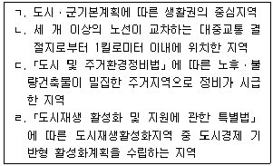
- ㄱ, ㄹ
- ㄴ, ㄷ
- ㄱ, ㄴ, ㄷ
- ㄴ, ㄷ, ㄹ
- ㄱ, ㄴ, ㄷ, ㄹ
(정답률: 알수없음)
4. 국토의 계획 및 이용에 관한 법령상 개발행위허가에 관한 설명으로 옳은 것은? (단, 조례는 고려하지 않음)
- 도시ㆍ군계획사업에 의한 행위의 경우에도 개발행위허가를 받아야 한다.
- 토지의 일부를 공공용지 또는 공용지로 하기 위한 토지의 분할은 개발행위허가를 받아야 한다.
- 농림지역에 물건을 1개월 이상 쌓아놓는 경우 개발행위허가를 요하지 아니한다.
- 경작을 위한 토지의 형질 변경으로서 전ㆍ답 사이의 지목의 변경을 수반하는 경우에는 개발행위허가를 받아야 한다.
- 개발행위허가를 받은 사항으로서 사업면적을 10퍼센트 범위 안에서 축소하는 경우에는 개발행위 허가를 요하지 아니한다.
(정답률: 알수없음)
5. 국토의 계획 및 이용에 관한 법령상 성장관리방안에 포함될 수 있는 사항을 모두 고른 것은? (단, 조례는 고려하지 않음)
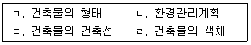
- ㄱ, ㄴ, ㄷ
- ㄱ, ㄴ, ㄹ
- ㄱ, ㄷ, ㄹ
- ㄴ, ㄷ, ㄹ
- ㄱ, ㄴ, ㄷ, ㄹ
(정답률: 알수없음)
6. 국토의 계획 및 이용에 관한 법령상 이행강제금의 부과에 관한 설명으로 옳지 않은 것은?
- 토지의 이용의무를 이행하지 아니한 자에 대하여 이용의무의 이행을 명하는 경우, 그 이행명령은 3월 이내의 기간을 정하여 문서로 하여야 한다.
- 시장ㆍ군수 또는 구청장은 이행강제금을 부과하기 전에 이행강제금을 부과ㆍ징수한다는 뜻을 미리 문서로 알려야 한다.
- 이행강제금 부과처분을 받은 자가 이의를 제기하려는 경우에는 부과처분의 고지를 받은 날부터 30일 이내에 이의를 제기하여야 한다.
- 토지의 이용의무에 대한 이행명령을 받은 자가 그 명령을 이행하는 경우에는 명령을 이행하기 전에 이미 부과된 이행강제금은 징수하여서는 아니된다.
- 토지의 이용 의무기간이 지난 후에는 이행강제금을 부과할 수 없다.
(정답률: 알수없음)
7. 국토의 계획 및 이용에 관한 법령상 계획관리지역의 건폐율 및 용적률의 최대한도를 바르게 연결한 것은? (단, 조례는 고려하지 않음)
- 건폐율: 20% 이하, 용적률: 80% 이하
- 건폐율: 20% 이하, 용적률: 100% 이하
- 건폐율: 40% 이하, 용적률: 80% 이하
- 건폐율: 40% 이하, 용적률: 100% 이하
- 건폐율: 50% 이하, 용적률: 120% 이하
(정답률: 알수없음)
8. 국토의 계획 및 이용에 관한 법령상 용도지구에 관한 설명으로 옳지 않은 것은?
- 용도지구란 토지의 이용 및 건축물의 용도ㆍ건폐율ㆍ용적률ㆍ높이 등에 대한 용도지역의 제한을 강화하거나 완화하여 적용함으로써 용도지역의 기능을 증진시키고 미관ㆍ경관ㆍ안전 등을 도모하기 위하여 도시ㆍ군관리계획으로 결정하는 지역을 말한다.
- 국토교통부장관은 지정된 용도지구의 일부에 대하여 지구단위계획구역을 지정할 수 없다.
- 국토교통부장관은 미관지구를 중심지미관지구, 역사문화미관지구, 일반미관지구로 세분하여 지정할 수 있다.
- 건축물이나 그 밖의 시설의 용도ㆍ종류 및 규모 등의 제한은 해당 용도지구의 지정목적에 적합하여야 한다.
- 지방자치단체의 장이 다른 법률에 따라 토지 이용에 관한 지구를 지정하는 경우에는 그 지구의 지정목적이「국토의 계획 및 이용에 관한 법률」에 따른 용도지구의 지정목적에 부합되도록 하여야한다.
(정답률: 알수없음)
9. 국토의 계획 및 이용에 관한 법령상 도시ㆍ군계획시설사업 등에 관한 설명으로 옳은 것은?
- 도시ㆍ군계획시설사업의 시행자가 실시계획의 인가를 받고자 하는 경우 국토교통부장관이 지정한 시행자는 시ㆍ도지사의 인가를 받아야 한다.
- 준공검사를 받은 후에 해당 도시ㆍ군계획시설사업에 대하여 사업명칭을 변경하기 위하여 실시계획을 작성하는 경우에도 국토교통부장관의 인가를 받아야 한다.
- 도시ㆍ군계획시설사업에 관한 실시계획에는 사업의 종류 및 명칭은 포함되어야 하지만, 사업의 면적 또는 규모는 반드시 포함되어야 하는 것은 아니다.
- 행정청이 아닌 도시ㆍ군계획시설사업 시행자의 처분에 대해서는 그 시행자에게 행정심판을 제기하여야 한다.
- 도시ㆍ군계획시설사업을 분할시행하는 때에는 분할된 지역별로 실시계획을 작성할 수 있다.
(정답률: 알수없음)
10. 국토의 계획 및 이용에 관한 법령상 지구단위계획에 관한 설명으로 옳지 않은 것은?
- 지구단위계획은 도시ㆍ군관리계획으로 결정한다.
- 지구단위계획이 수립되어 있는 지구단위계획구역에서 건축물을 건축 또는 용도변경하거나 공작물을 설치하려면 그 지구단위계획에 맞게 하여야 한다.
- 지구단위계획의 수립기준은 국토교통부장관이 정한다.
- 지구단위계획을 수립한 지역에서 하는 개발행위는 중앙도시계획위원회나 지방도시계획위원회의 심의를 거쳐야 한다.
- 지구단위계획구역으로 지정된 지역이 개발행위허가가 제한되어 있는 경우 중앙도시계획위원회나 지방도시계획위원회의 심의를 거치지 아니하고 한차례만 2년 이내의 기간 동안 개발행위허가의 제한을 연장할 수 있다.
(정답률: 알수없음)
11. 국토의 계획 및 이용에 관한 법령상 토지거래의 허가 등에 관한 설명으로 옳지 않은 것은?
- 허가구역의 지정은 허가구역의 지정을 공고한 날부터 7일 후에 그 효력이 발생한다.
- 허가구역에 있는 토지의 소유권을 이전하는 토지거래계약 당사자의 한쪽이「지방공기업법」에 의한 지방공사인 경우 그 기관의 장이 시장ㆍ군수 또는 구청장과 협의를 할 수 있고, 그 협의가 성립된 때에는 토지거래계약에 관한 허가를 받은 것으로 본다.
- 「공익사업을 위한 토지 등의 취득 및 보상에 관한 법률」에 따른 토지의 수용의 경우에는 토지거래계약에 관한 허가 규정이 적용되지 아니한다.
- 「민원사무처리에 관한 법률」에 따른 처리기간에 허가증의 발급 또는 불허가처분 사유의 통지가 없거나 선매협의 사실의 통지가 없는 경우에는 그 기간이 끝난 날의 다음날에 토지거래계약에 관한 허가가 있는 것으로 본다.
- 법령의 규정에 의하여 조세ㆍ부담금 등을 토지로 물납하는 경우에는 토지거래계약에 관한 허가 규정이 적용되지 아니한다.
(정답률: 알수없음)
12. 국토의 계획 및 이용에 관한 법령상 용도지역에 관한 설명으로 옳은 것은?
- 도시지역, 관리지역, 농림지역 또는 자연환경보전 지역으로 용도가 지정되지 아니한 지역에 대해서는 용도지역의 건폐율과 용적률 규정을 적용할 때에 자연환경보전지역에 관한 규정을 적용한다.
- 도시지역은 주거지역, 상업지역, 공업지역, 자연환경보전지역으로 구분하여 지정한다.
- 자연환경보전지역은 녹지지역, 보전관리지역으로 구분하여 지정한다.
- 「항만법」에 따른 항만구역으로서 도시지역에 연접한 공유수면은 관리지역으로 결정ㆍ고시된 것으로 본다.
- 도시지역에 대해서는「도로법」제40조에 따른 접도구역 규정이 적용된다.
(정답률: 알수없음)
13. 국토의 계획 및 이용에 관한 법령에서 명시하고 있는 광역도시계획의 내용에 해당하지 않는 것은?
- 경관계획에 관한 사항
- 공간구조, 생활권의 설정 및 인구의 배분에 관한사항
- 광역계획권의 녹지관리체계와 환경 보전에 관한사항
- 광역계획권의 공간 구조와 기능 분담에 관한 사항
- 광역시설의 배치ㆍ규모ㆍ설치에 관한 사항
(정답률: 알수없음)
14. 국토의 계획 및 이용에 관한 법령상 도시ㆍ군관리계획에 관한 설명으로 옳지 않은 것은?
- 이해관계인을 포함한 주민은 기반시설의 정비에 관한 사항에 대하여 도시ㆍ군관리계획의 입안권자에게 도시ㆍ군관리계획의 입안을 제안할 수 있다.
- 국토교통부장관은 국가계획과 관련된 경우에는 직접 도시ㆍ군관리계획을 입안할 수 있다.
- 도시ㆍ군관리계획입안의 제안을 받은 입안권자는 부득이한 사정이 있는 경우를 제외하고는 제안일부터 30일 이내에 도시ㆍ군관리계획입안에의 반영 여부를 제안자에게 통보하여야 한다.
- 개발제한구역의 지정 및 변경에 관한 도시ㆍ군관리계획은 국토교통부장관이 결정한다.
- 도시ㆍ군관리계획 결정의 효력은 지형도면을 고시한 날부터 발생한다.
(정답률: 알수없음)
15. 국토의 계획 및 이용에 관한 법령상 도시ㆍ군 계획시설 부지의 매수 청구에 관한 설명으로 옳은 것은?
- 매수의무자는 매수 청구를 받은 날부터 1년 이내에 매수 여부를 결정하여 토지소유자에게 알려야 한다.
- 지방자치단체인 매수의무자는 부재부동산 소유자의 토지 또는 비업무용 토지로서 매수대금이 2천만원을 초과하여 그 초과하는 금액을 지급하는 경우에는 도시ㆍ군계획시설채권을 발행하여 지급하여야 한다.
- 도시ㆍ군계획시설채권의 구체적인 상환기간은 20년 이내의 범위에서 지방자치단체의 조례로 정한다.
- 도시ㆍ군계획시설을 설치하거나 관리하여야 할 의무가 있는 자가 서로 다른 경우에는 관리하여야 할 의무가 있는 자에게 매수 청구하여야 한다.
- 매수의무자가 매수하기로 결정한 토지는 매수 결정을 알린 날부터 2년 이내에 매수하여야 한다.
(정답률: 알수없음)
16. 국토의 계획 및 이용에 관한 법령상 국가계획, 광역도시계획 및 도시ㆍ군계획의 관계에 관한설명으로 옳지 않은 것은?
- 광역도시계획의 내용이 국가계획의 내용과 다를 때에는 국가계획의 내용이 우선한다.
- 도시ㆍ군기본계획의 내용이 광역도시계획의 내용과 다를 때에는 광역도시계획의 내용이 우선한다.
- 도시ㆍ군계획은 특별시ㆍ광역시ㆍ특별자치시ㆍ특별자치도ㆍ시 또는 군의 관할 구역에서 수립되는 다른 법률에 따른 토지의 이용ㆍ개발 및 보전에 관한 계획의 기본이 된다.
- 도시ㆍ군계획은 국가계획에 부합되어야 하며, 도시ㆍ군계획의 내용이 국가계획의 내용과 다를 때에는 국가계획의 내용이 우선한다.
- 특별시장이 관할 구역에 대하여 다른 법률에 따른 환경ㆍ교통ㆍ수도ㆍ하수도ㆍ주택에 관하여 수립하는 부문별 계획은 도시ㆍ군기본계획의 내용에 부합되지 않아도 된다.
(정답률: 알수없음)
17. 부동산가격공시 및 감정평가에 관한 법령상 감정평가사에 대한 징계사유가 아닌 것은?
- 감정평가사 자격이 있는 자가 등록을 하기 전에 감정평가업자의 업무를 수행한 경우
- 감정평가사가 국토교통부장관에게 감정평가사사무소의 개설신고를 하기 전에 감정평가업을 영위하는 경우
- 감정평가사가 구비서류를 거짓으로 작성하는 등 부정한 방법으로 등록을 한 경우
- 감정평가사가 2 이상의 감정평가사사무소에 소속된 경우
- 감정평가사가 부정한 방법으로 감정평가사의 자격을 받은 경우
(정답률: 알수없음)
18. 부동산가격공시 및 감정평가에 관한 법령상 감정평가사징계위원회(이하 '징계위원회'라 함)에 관한 설명으로 옳은 것은?
- 국토교통부의 5급 공무원은 징계위원회의 위원이 될 수 없다.
- 「고등교육법」에 따른 대학에서 토지ㆍ주택 등에 관한 이론을 가르치는 조교수 이상은 징계위원회의 위원이 될 수 없다.
- 징계위원회의 위원의 임기는 2년으로 하되, 연임할 수 없다.
- 징계위원회는 9명의 위원으로 구성하며, 징계위원회의 의결은 재적위원 과반수의 찬성으로 한다.
- 징계위원회의 부위원장은 위원장이 지명하는 자로 한다.
(정답률: 알수없음)
19. 부동산가격공시 및 감정평가에 관한 법령상 지가 및 주택가격의 공시에 관한 설명으로 옳지 않은 것은?
- 표준주택가격의 공시에는「국토의 계획 및 이용에 관한 법률」등에 의한 토지의 용도제한이 포함되어야 한다.
- 개별주택가격의 공시에는 표준주택의 대지면적 및 형상이 포함되어야 한다.
- 표준지공시지가에 대하여 이의가 있는 자는 표준지공시지가의 공시일부터 30일 이내에 서면으로 국토교통부장관에게 이의를 신청할 수 있다.
- 시장ㆍ군수 또는 구청장은 국토교통부장관이 정한 개별공시지가의 조사ㆍ산정지침에 따라 개별공시지가를 조사ㆍ산정하여야 한다.
- 국토교통부장관이 따로 정하지 아니한 경우 표준주택가격의 공시기준일은 1월 1일로 한다.
(정답률: 알수없음)
20. 부동산가격공시 및 감정평가에 관한 법령상 감정평가법인에 관한 설명으로 옳지 않은 것은?
- 감정평가법인의 주사무소에 주재하는 최소 감정평가사의 수는 3명이다.
- 감정평가법인은 당해 법인의 소속감정평가사 외의자로 하여금 감정평가업자의 업무를 하게 하여서는 아니된다.
- 감정평가법인의 사원 또는 이사는 감정평가사이어야 한다.
- 감정평가법인은 사원 전원의 동의 또는 주주총회의 의결이 있는 때에는 국토교통부장관의 인가를 받아 다른 감정평가법인과 합병할 수 있다.
- 감정평가법인의 자본금은 2억원 이상이어야 한다.
(정답률: 알수없음)
21. 부동산가격공시 및 감정평가에 관한 법령상 용어에 관한 설명으로 옳지 않은 것은?
- '표준지공시지가'라 함은「부동산가격공시 및 감정평가에 관한 법률」의 규정에 의한 절차에 따라 국토교통부장관이 조사ㆍ평가하여 공시한 표준지의 단위면적당 가격을 말한다.
- '토지등'에는「입목에 관한 법률」에 의한 입목은 포함되지 아니한다.
- '적정가격'이라 함은 당해 토지 및 주택에 대하여 통상적인 시장에서 정상적인 거래가 이루어지는 경우 성립될 가능성이 가장 높다고 인정되는 가격을 말한다.
- '감정평가'라 함은 토지등의 경제적 가치를 판정하여 그 결과를 가액으로 표시하는 것을 말한다.
- '다세대주택'이라 함은 주택으로 쓰이는 1개 동의 연면적(지하주차장 면적을 제외한다)이 660제곱미터 이하이고, 층수가 4개층 이하인 주택을 말한다.
(정답률: 알수없음)
22. 부동산가격공시 및 감정평가에 관한 법령상의 내용으로 옳지 않은 것은?
- 법원에 계속중인 소송 또는 경매를 위한 토지등의 감정평가는 감정평가업자의 업무에 속한다.
- 금고 이상의 형의 선고유예를 받고 그 선고유예기간 중에 있는 자는 감정평가사가 될 수 없다.
- 감정평가업자는 정당한 사유없이 그 업무상 알게 된 비밀을 누설하여서는 아니된다.
- 감정평가업자는 감정평가서의 원본을 교부일부터 3년 이상, 감정평가서의 관련 서류를 교부일부터 1년이상 보존하여야 한다.
- 감정평가협회는 법인으로 한다.
(정답률: 알수없음)
23. 부동산가격공시 및 감정평가에 관한 법령상 표준지공시지가에 관한 설명으로 옳은 것은?
- 지역분석조서는 표준지조사평가보고서에 첨부되지 않는다.
- 국토교통부장관은 표준지공시지가에 대한 이의신청의 내용이 타당하다고 인정될 때에는 당해 표준지공시지가를 조정하되, 이를 다시 공시하여야 하는 것은 아니다.
- 국토교통부장관은 토지가격 산정의 목적을 위한 지가산정을 위하여 필요하다고 인정하는 경우에는 토지가격비준표를 작성하여 관계행정기관 등에 제공하여야 한다.
- 표준지공시지가에 대한 이의신청에 관한 사항을 심의하기 위하여 국토교통부장관 소속으로 중앙토지수용위원회를 둔다.
- 표준지공시지가의 공시사항에는 표준지 및 주변토지의 이용상황은 포함되지 않는다.
(정답률: 알수없음)
24. 부동산가격공시 및 감정평가에 관한 법령상 개별공시지가에 관한 설명으로 옳지 않은 것은?
- 시장ㆍ군수 또는 구청장은 개별공시지가에 토지가격비준표의 적용에 오류가 있는 경우 시ㆍ군ㆍ구부동산평가위원회의 심의를 거치지 아니하고 직권으로 정정하여 결정ㆍ공시하여야 한다.
- 개별공시지가를 공시하는 시장ㆍ군수 또는 구청장은 필요하다고 인정하는 때에는 개별공시지가의 결정 및 이의신청에 관한 사항을 토지소유자등에게 개별통지할 수 있다.
- 국토교통부장관은 개별공시지가의 조사ㆍ산정지침을 정하여 시장ㆍ군수 또는 구청장에게 통보하여야 한다.
- 시장ㆍ군수 또는 구청장이 개별공시지가를 결정ㆍ공시하는 경우에는 당해 토지와 유사한 이용가치를 지닌다고 인정되는 하나 또는 둘 이상의 표준지의 공시지가를 기준으로 토지가격비준표를 사용하여 지가를 산정하여야 한다.
- 국토교통부장관은 지가공시행정의 합리적인 발전을 도모하고 표준지공시지가와 개별공시지가와의 균형유지 등 적정한 지가형성을 위하여 필요하다고 인정하는 경우에는 개별공시지가의 결정ㆍ공시 등에 관하여 시장ㆍ군수 또는 구청장을 지도ㆍ감독할 수 있다.
(정답률: 알수없음)
25. 국유재산법령상 행정재산에 관한 설명으로 옳은 것은?
- 중앙관서의 장은 행정재산으로 사용하기로 결정한 날부터 5년이 지난 날까지 행정재산으로 사용되지 아니한 경우 지체 없이 그 용도를 폐지하여야 한다.
- 행정재산은 처분하지 못하므로, 사유재산과 교환하여 그 교환받은 재산을 행정재산으로 관리하려는 경우에도 교환할 수 없다.
- 행정재산의 관리수탁자는 위탁받은 재산의 연간 관리현황을 감사원에 보고하여야 한다.
- 행정재산을 사용허가하려는 경우 수의(隨意)의 방법을 우선적으로 사용하여야 한다.
- 중앙관서의 장은 행정재산에 대하여 일반경쟁입찰을 두 번 실시하여도 낙찰자가 없는 재산에 대하여는 세 번째 입찰부터 최초 사용료 예정가격의 100분의 10을 최저한도로 하여 매회 100분의 5의 금액만큼 그 예정가격을 낮추는 방법으로 조정할 수 있다.
(정답률: 알수없음)
26. 국유재산법령상의 내용으로 옳지 않은 것은?
- 행정재산을 사용허가한 때에는 매년 사용료를 징수한다.
- 정부는 정부출자기업체를 새로 설립하려는 경우 일반재산을 현물출자할 수 있다.
- 사권이 설정된 재산은 판결에 따라 취득하는 경우에도 그 사권이 소멸된 후가 아니면 국유재산으로 취득하지 못한다.
- 일반재산은 대부할 수 있다.
- 행정재산의 사용료가 면제되는 경우도 있다.
(정답률: 알수없음)
27. 국유재산법령상 국유재산의 관리에 관한 설명으로 옳지 않은 것은?
- 국유재산의 사용료가 납부기한까지 납부되지 아니한 경우 연체료 부과대상이 되는 연체기간은 납기일부터 60개월을 초과할 수 없다.
- 국가는 과오납된 국유재산의 사용료를 반환하는 경우에는 과오납된 날의 다음 날부터 반환하는 날 까지의 기간에 대하여 이자를 가산하여 반환한다.
- 지방자치단체가 은닉된 국유재산이나 소유자 없는 부동산을 발견하여 신고한 경우에는 그 재산가격의 2분의 1의 범위에서 그 지방자치단체에 국유재산을 양여하거나 보상금을 지급할 수 있다.
- 정당한 사유 없이 국유재산을 점유하거나 이에 시설물을 설치한 경우「행정대집행법」을 준용하여 철거할 수 없다.
- 은닉된 국유재산을 선의(善意)로 취득한 후 그 재산을 국가에 자진 반환한 자에게 같은 재산을 매각하는 경우에는 그 매각대금을 이자 없이 12년 이하에 걸쳐 나누어 내게 할 수 있다.
(정답률: 알수없음)
28. 국유재산법령상 국유재산에 관한 설명으로 옳은 것은?
- 대통령 관저는 공용재산이다.
- 기업용재산은 행정재산이 아니고 일반재산이다.
- 정부기업이 직접 사업용으로 사용하는 재산은 보존용재산이다.
- 총괄청은 일반재산을 공용재산으로 전환하여 관리할 수 있다.
- 행정재산은 시효취득의 대상이 된다.
(정답률: 알수없음)
29. 건축법령상 건축물의 높이 제한에 관한 설명으로 옳은 것은? (단,「건축법」제73조에 따른 적용 특례 및 조례는 고려하지 않음)
- 허가권자는 같은 가로구역에서 건축물의 용도 및 형태에 따라 건축물의 높이를 다르게 정하여서는 아니된다.
- 가로구역별 건축물의 높이를 지정하는 경우에는 지방건축위원회의 심의를 거치지 아니한다.
- 가로구역을 단위로 하여 건축물의 높이를 지정ㆍ공고함에 있어, 건축물의 높이는 지표면으로부터 그 건축물의 상단까지의 높이로 산정한다.
- 가로구역별로 건축물의 높이를 지정ㆍ공고할 때에는 해당 가로구역의 상ㆍ하수도 등 간선시설의 수용능력을 고려하여야 한다.
- 일반상업지역에서 하나의 대지에 두 동 이상의 공동주택을 건축하는 경우에는 채광의 확보를 위하여 높이가 제한된다.
(정답률: 알수없음)
30. 건축법령상 건축물의 건축허가를 받으면 허가를 받거나 신고를 한 것으로 본다. 이러한 허가 등의 의제에 해당하지 않는 것은?
- 「농지법」에 따른 농지전용허가
- 「하천법」에 따른 하천점용허가
- 「폐기물처리법」에 따른 폐기물처리업허가
- 「대기환경보전법」에 따른 대기오염물질 배출시설 설치의 신고
- 「국토의 계획 및 이용에 관한 법률」에 따른 개발 행위허가
(정답률: 알수없음)
31. 건축법령상 소음 방지를 위하여 일정한 기준에 따라 경계벽을 설치하여야 하는 경우가 아닌 것은? (단,「건축법」제73조에 따른 적용 특례는 고려하지 않음)
- 의료시설의 병실 간
- 숙박시설의 객실 간
- 도서관의 열람실 간
- 단독주택 중 다가구주택의 각 가구 간
- 제2종 근린생활시설 중 다중생활시설의 호실 간
(정답률: 알수없음)
32. 건축법령상 국토교통부장관이 고시하는 범죄예방 기준에 따라 건축하여야 하는 건축물이 아닌것은? (단,「건축법」제3조에 따른 적용 제외는 고려하지 않음)
- 수련시설
- 노유자시설
- 제2종 근린생활시설 중 다중생활시설
- 제1종 근린생활시설 중 일용품을 판매하는 소매점
- 공동주택 중 세대수가 300세대 이상인 아파트
(정답률: 알수없음)
33. 측량ㆍ수로조사 및 지적에 관한 법령상 지적공부 등본의 발급 기관은? (단, 정보처리시스템을 통하여 기록ㆍ저장된 지적공부의 등본을 발급하려는 경우는 고려하지 않음)
- 해당 시ㆍ도지사
- 해당 지적소관청
- 국토교통부장관
- 행정자치부장관
- 해당 등기소의 장
(정답률: 알수없음)
34. 측량ㆍ수로조사 및 지적에 관한 법령상 지적공부와 등록사항의 연결이 바르지 않은 것은?
- 토지대장 - 지목과 면적
- 공유지연명부 – 소유권 지분
- 지적도 - 건축물 및 구조물 등의 위치
- 경계점좌표등록부 – 소유자와 부호도
- 대지권등록부 - 전유부분(專有部分)의 건물표시
(정답률: 알수없음)
35. 측량ㆍ수로조사 및 지적에 관한 법령상 지적소관청이 관할 등기관서에 그 등기를 촉탁하여야 하는 경우에 해당하지 않는 것은?
- 축척변경의 경우
- 등록사항의 직권정정의 경우
- 지번변경의 필요에 의해 지번을 변경한 경우
- 행정구역의 개편으로 지번을 새로 부여하는 경우
- 신규등록을 이유로 토지이동의 내용을 정리한 경우
(정답률: 알수없음)
36. 측량ㆍ수로조사 및 지적에 관한 법령상 지목의 구분 및 설정방법 등에 관한 설명으로 옳지 않은 것은?
- 1필지가 둘 이상의 용도로 활용되는 경우에는 주된 용도에 따라 지목을 설정한다.
- 토지가 일시적 또는 임시적인 용도로 사용될 때에는 지목을 변경하지 아니한다.
- 원상회복을 조건으로 돌을 캐내는 곳 또는 흙을 파내는 곳으로 허가된 토지는 '잡종지'로 한다.
- 자연의 유수가 있거나 있을 것으로 예상되는 토지는 '하천'으로 한다.
- 육상에 인공으로 조성된 수산생물의 번식 또는 양식을 위한 시설을 갖춘 부지와 이에 접속된 부속시설물의 부지는 '양어장'으로 한다.
(정답률: 알수없음)
37. 부동산등기법령상 등기한 권리의 순위에 관한설명으로 옳지 않은 것은?
- 같은 부동산에 관하여 등기한 권리의 순위는 법률에 다른 규정이 없으면 등기한 순서에 따른다.
- 등기의 순서는 등기기록 중 같은 구에서 한 등기 상호간에는 순위번호에 따른다.
- 등기의 순서는 등기기록 중 다른 구에서 한 등기 상호간에는 접수번호에 따른다.
- 부기등기의 순위는 원칙적으로 주등기의 순위에 따른다.
- 같은 주등기에 관한 부기등기 상호간의 순위는 후(後) 부기등기가 선(先) 부기등기에 우선한다.
(정답률: 알수없음)
38. 부동산등기법령상 부기로 하여야 하는 등기가 아닌 것은?
- 환매특약등기
- 근저당권이전등기
- 소유권에 대한 가처분등기
- 등기명의인표시의 경정등기
- 권리소멸약정등기
(정답률: 알수없음)
39. 부동산등기법령상 등기관이 직권으로 등기를 말소할 수 있는 경우는?
- 등기를 신청할 때 당사자가 출석하지 아니한 경우
- 등기에 필요한 첨부정보를 제공하지 아니한 경우
- 신청할 권한이 없는 자가 신청한 경우
- 사건이 등기할 것이 아닌 경우
- 신청정보와 등기원인을 증명하는 정보가 일치하지 아니한 경우
(정답률: 알수없음)
40. 부동산등기법령상 담보권 등기에 관한 설명으로 옳은 것은?
- 등기원인에 그 약정이 있는 경우에도 변제기는 저당권의 등기사항이 아니다.
- 변제기와 이자의 약정이 있는 경우에도 그 내용은 저당권부채권에 대한 질권의 등기사항이 아니다.
- 등기관이 일정한 금액을 목적으로 하지 아니하는 채권을 담보하기 위한 저당권설정의 등기를 할 때에는 그 채권의 평가액을 기록하지 아니한다.
- 등기관이 동일한 채권에 관하여 여러 개의 부동산에 관한 권리를 목적으로 하는 저당권설정의 등기를 할 때에는 각 부동산의 등기기록에 그 부동산에 관한 권리가 다른 부동산에 관한 권리와 함께 저당권의 목적으로 제공된 뜻을 기록하여야 한다.
- 등기관이 채권의 일부에 대한 양도로 인한 저당권 일부이전등기를 할 때에는 권리에 관한 등기사항 이외에 별도로 양도액을 기록하지 아니한다.
(정답률: 알수없음)
2과목: 회계학
41. 다음은 공정가치에 관한 정의이다. 괄호 안에 들어갈 적절한 단어를 나타낸 것은? (순서대로 (ㄱ), (ㄴ), (ㄷ))
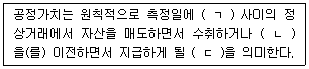
- 매도자와 매수자, 손실, 유출가격
- 이해관계자, 손실, 유입가격
- 이해관계자, 부채, 유입가격
- 시장참여자, 부채, 유입가격
- 시장참여자, 부채, 유출가격
(정답률: 알수없음)
42. 수익에 관한 설명으로 옳지 않은 것은?
- 수익은 자본참여자의 출자관련 증가분을 제외한 자본의 증가를 수반하는 것으로서 회계기간의 정상적인 활동에서 발생하는 경제적효익의 총유입을 의미한다.
- 판매자가 판매대금의 회수를 확실히 할 목적만으로 해당 재화의 법적 소유권을 계속 가지고 있더라도 소유에 따른 중요한 위험과 보상이 이전되었다면 해당 거래를 판매로 보아 수익을 인식한다.
- 수익금액은 일반적으로 판매자와 구매자 또는 자산의 사용자 간의 합의에 따라 결정되며, 판매자에 의해 제공된 매매할인 및 수량리베이트를 고려하여 받았거나 받을 대가의 공정가치로 측정한다.
- 이미 수익으로 인식한 금액에 대해서는, 추후에 회수가능성이 불확실해지는 경우에도 이미 인식한 수익금액을 조정하지 아니하고, 회수불가능한 금액이나 더 이상 회수가능성이 높다고 볼 수 없는 금액을 비용으로 인식한다.
- 대리관계에서 본인을 대신하여 대리인인 기업이 받는 금액은 경제적효익의 총유입에 해당하므로 대리인인 기업의 수익에 해당한다.
(정답률: 알수없음)
43. (주)감평은 보유중인 유형자산을 (주)대한의 유형자산과 교환하면서 공정가치 차액에 해당하는 현금 ￦300,000을 지급하였다. 교환일 현재 보유중인 유형자산의 취득원가는 ￦2,100,000, 감가상각누계액은 ￦500,000, 공정가치는 ￦1,700,000이다. (주)감평이 교환과정에서 인식할 유형자산의 취득원가와 유형자산처분손익은? (단, 동 교환거래는 상업적 실질이 있다고 가정한다.) (순서대로 취득원가, 유형자산처분손익)
- ￦2,000,000, ￦0
- ￦2,000,000, 이익 ￦100,000
- ￦1,900,000, 손실 ￦100,000
- ￦1,900,000, 이익 ￦100,000
- ￦1,900,000, ￦0
(정답률: 알수없음)
44. (주)감평은 20×1년 12월 말 현재 창고에 보관중인 상품재고를 실사한 결과, 금액이 ￦2,000,000임을 확인하였다. 다음 자료를 반영하여 계산한 기말상품재고액은?
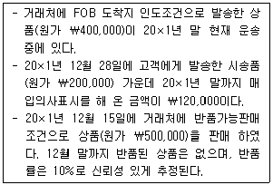
- ￦2,130,000
- ￦2,480,000
- ￦2,530,000
- ￦2,980,000
- ￦3,100,000
(정답률: 알수없음)
45. 상품매매기업인 (주)감평의 정상영업주기는 상품매입시점부터 판매대금 회수시점까지 기간으로 정의된다. 20×1년 정상영업주기는 42일이며, 매출이 ￦1,000,000, 평균매출채권이 ￦50,000, 평균재고자산이 ￦40,000이라면 (주)감평의 20×1년 매출원가는? (단, 매출은 전액 외상매출이고, 1년은 360일로 가정한다.)
- ￦520,000
- ￦540,000
- ￦560,000
- ￦580,000
- ￦600,000
(정답률: 알수없음)
46. (주)감평은 20×3년 초 건설공사를 수주하였다. 공사기간은 20×5년 말까지이며, 총공사계약금액은 ￦1,000,000이다. 20×3년 공사진행 과정에서 발생한 비용은 ￦500,000이다. 전체 공사에서 손실이 발생하지 않을 것으로 예상되었으나, 총 공사예정원가와 진행률을 신뢰성 있게 추정할 수 없다. 이 때 (주)감평이 20×3년에 공사계약에서 인식할 손익은? (단, 발생원가의 회수가능성은 높다고 판단된다.)
- ￦1,000,000 이익
- ￦500,000 이익
- ￦0
- ￦500,000 손실
- ￦1,000,000 손실
(정답률: 알수없음)
47. 20×1년 1월 1일에 설립된 (주)감평은 20×1년 말에 확정급여제도를 도입하였다. 확정급여채무계산 시 적용한 할인율은 연 10%이며, 20×1년 이후 할인율의 변동은 없다. 다음 자료를 이용하여 계산된 20×2년 순확정급여부채는?
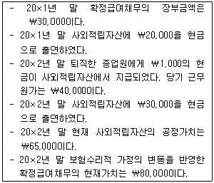
- ￦15,000
- ￦20,000
- ￦25,000
- ￦65,000
- ￦80,000
(정답률: 알수없음)
48. (주)감평의 20×5년 법인세와 관련된 자료가 다음과 같을 때, 법인세비용, 이연법인세자산, 이연법인세부채는 각각 얼마인가? (순서대로 법인세비용, 이연법인세자산, 이연법인세부채)
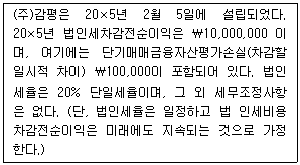
- ￦2,000,000, ￦20,000, ￦0
- ￦2,000,000, ￦0, ￦20,000
- ￦2,020,000, ￦20,000, ￦20,000
- ￦2,020,000, ￦20,000, ￦0
- ￦2,020,000, ￦0, ￦20,000
(정답률: 알수없음)
49. (주)감평은 20×1년 10월 1일 미국에 소재한 토지를 영업에 사용할 목적으로 $10,000에 취득하였고, 20×1년 12월 31일 현재 토지의 공정가치는 $12,000이다. (주)감평의 재무제표는 원화로 환산표시하며, 이 기간 중 $ 대비 원화의 환율은 다음과 같다.
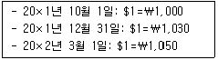
(주)감평이 20×2년 3월 1일에 위 토지의 50%를 $6,000에 매각하였을 때, 원가모형에 의한 유형자산처분이익은?
- ￦18,000
- ￦300,000
- ￦1,000,000
- ￦1,180,000
- ￦1,300,000
(정답률: 알수없음)
50. (주)감평은 20×4년 초 ￦5,000,000(잔존가치 ￦1,000,000, 내용연수 5년, 정액법 감가상각)에 건물을 취득하였다. (주)감평은 20×4년 말 건물을 공정가치 ￦6,300,000으로 재평가하고, 자산의 장부금액이 재평가금액과 일치하도록 감가상각누계액과 총장부금액을 비례적으로 수정하였다. (주)감평이 20×4년 말 재무상태표에 보고할 건물의 감가상각누계액은?
- ￦600,000
- ￦800,000
- ￦1,200,000
- ￦1,300,000
- ￦2,100,000
(정답률: 알수없음)
51. (주)감평의 보통주에 귀속되는 당기순이익이 20×2년과 20×3년에 각각 ￦450,000과 ￦1,080,000이다. 20×3년 8월 31일까지 보통주의 발행주식수는 400주이다. (주)감평은 20×2년 1월 2일에 자기주식 100주를 취득하여 20×3년 9월 1일까지 보유하고 있다. (주)감평은 20×3년 9월 1일에 유통보통주 1주당 2주의 보통주를 지급하는 무상증자를 실시하였다. 20×3년 포괄손익계산서에 비교표시되는 20×2년과 20×3년의 기본주당순이익은 각각 얼마인가? (순서대로 20×2년, 20×3년)
- ￦500, ￦1,080
- ￦500, ￦1,200
- ￦1,125, ￦1,080
- ￦1,500, ￦1,080
- ￦1,500, ￦1,200
(정답률: 알수없음)
52. (주)감평은 20×4년 1월 1일 (주)대한을 흡수합병하였다. 합병관련 자료가 다음과 같을 때 합병시 영업권의 금액은?
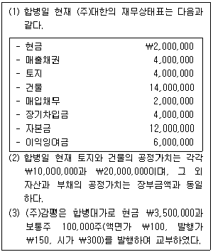
- ￦1,550,000
- ￦2,500,000
- ￦3,500,000
- ￦4,500,000
- ￦15,500,000
(정답률: 알수없음)
53. 정부보조금의 회계처리에 관한 설명으로 옳지 않은 것은?
- 정부보조금은 정부보조금에 부수되는 조건의 준수와 보조금 수취에 대한 합리적인 확신이 있을 경우에만 정부보조금을 인식한다.
- 정부보조금으로 보전하려 하는 관련원가를 비용으로 인식하는 기간에 걸쳐 체계적인 기준에 따라 정부보조금을 당기손익으로 인식한다.
- 이미 발생한 비용이나 손실에 대한 보전 또는 향후의 관련원가 없이 기업에 제공되는 즉각적인 금융지원으로 수취하는 정부보조금은 정부보조금을 수취할 권리가 발생하는 기간에 당기손익으로 인식한다.
- 정부보조금은 비화폐성자산을 기업이 사용하도록 이전하는 형식을 취할 수 있다. 이러한 상황에서는 비화폐성자산을 공정가치로 회계처리할 수 없다.
- 자산관련 정부보조금은 재무상태표에 이연수익으로 표시하거나 자산의 장부금액을 결정할 때 차감하여 표시한다.
(정답률: 알수없음)
54. (주)감평은 20×1년 1월 1일에 기계장치를 ￦1,000,000에 취득하였다.(잔존가치 ￦0, 내용연수 5년, 정액법 감가상각, 원가모형 적용) 20×3년 12월 31일에 동 기계장치의 순공정가치는 ￦300,000으로 하락하였으며, 사용가치는 ￦250,000으로 추정되어 손상을 인식하였다. 20×4년 12월 31일에 동 기계장치의 회수가능액이 ￦230,000으로 회복되고 손상차손환입 요건을 충족하는 경우, (주)감평이 계상할 손상차손환입액은?
- ￦30,000
- ￦50,000
- ￦75,000
- ￦80,000
- ￦1⑤,000
(정답률: 알수없음)
55. (주)감평은 20×3년 초 토지를 ￦1,500,000에 취득하고 매년 말 공정가치로 평가하는 재평가모형을 적용한다. 또한 재평가잉여금을 자산의 처분시점에 이익잉여금으로 직접 대체하기로 하였다. 동 토지의 매년 말 공정가치는 다음과 같다.
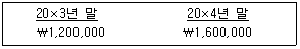
(주)감평이 20×5년 말에 동 토지를 ￦1,100,000에 처분했을 때, 토지의 보유 및 처분과 관련하여 다음의 설명 중 옳지 않은 것은?
- 20×3년 초부터 20×5년 말까지 이익잉여금이 총 ￦400,000 감소한다.
- 20×3년 당기순이익이 ￦300,000 감소한다.
- 20×4년 당기순이익이 ￦200,000 증가한다.
- 20×4년 기타포괄이익이 ￦100,000 증가한다.
- 20×5년 유형자산처분손실이 ￦500,000 인식된다.
(정답률: 알수없음)
56. 금융상품에 해당하는 것을 모두 고른 것은?
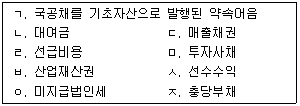
- ㄱ, ㄴ, ㄹ
- ㄱ, ㄴ, ㄷ, ㅁ
- ㄱ, ㄷ, ㅁ, ㅅ
- ㄴ, ㄷ, ㅁ, ㅇ
- ㄴ, ㄹ, ㅂ, ㅇ, ㅈ
(정답률: 알수없음)
57. (주)감평은 20×1년 1월 1일에 다음과 같은 전환 사채를 액면발행하였다.
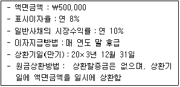
현가계수표는 다음과 같다.
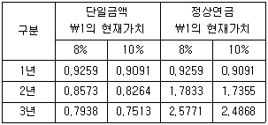
20×1년 1월 1일 전환사채 발행시 부채요소와 자본요소로 계상될 금액은 각각 얼마인가? (순서대로 부채요소, 자본요소)
- ￦500,000, ￦0
- ￦24,878, ￦475,122
- ￦4,976, ￦495,024
- ￦475,122, ￦24,878
- ￦495,747, ￦4,253
(정답률: 알수없음)
58. '농림어업'에 관한 회계처리로 옳지 않은 것은?
- 생물자산은 최초 인식시점과 매 보고기간말에 공정가치에서 추정 매각부대원가를 차감한 금액(순공정가치)으로 측정하여야 한다. 다만, 공정가치를 신뢰성 있게 측정할 수 없는 경우는 제외한다.
- 생물자산에서 수확된 수확물은 수확시점에 순공정가치로 측정하여야 한다.
- 생물자산을 최초 인식시점에 순공정가치로 인식하여 발생하는 평가손익과 생물자산의 순공정가치 변동으로 발생하는 평가손익은 발생한 기간의 당기손익에 반영한다.
- 수확물을 최초 인식시점에 순공정가치로 인식하여 발생하는 평가손익은 발생한 기간의 기타포괄손익에 반영한다.
- 순공정가치로 측정하는 생물자산과 관련된 정부보조금에 다른 조건이 없는 경우에는 이를 수취할 수 있게 되는 시점에만 당기손익으로 인식한다.
(정답률: 알수없음)
59. 유형자산의 장부금액에 가산하지 않는 항목을 모두 고른 것은?
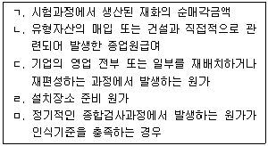
- ㄱ
- ㄱ, ㄷ
- ㄴ, ㄹ
- ㄴ, ㄷ, ㅁ
- ㄷ, ㄹ, ㅁ
(정답률: 알수없음)
60. (주)감평은 20×1년 1월 1일부터 공장을 신축하였으며, 이를 위해 연 8%의 이자율로 특정목적차입금 ￦1,000,000을 차입하였다. (주)감평은 동 차입금 ￦1,000,000 중 1월 1일과 4월 1일에 각각 ￦200,000과 ￦600,000을 공사비로 지출하였으며, 지출되지 않은 금액을 금융기관에 예치 하여 연 6%의 투자수익을 거두었다. 이 공장은 20×2년에 완공될 예정이며, 이 경우 20×1년도에 자본화할 차입원가는? (단, 이자는 월할계산한다.)
- ￦21,000
- ￦36,000
- ￦47,000
- ￦59,000
- ￦80,000
(정답률: 알수없음)
61. (주)감평의 20×5년 당기순이익은 ￦2,500,000이다. 다음 자료를 이용하여 20×5년의 영업활동 현금흐름을 계산하면? (단, 간접법으로 계산한다.)
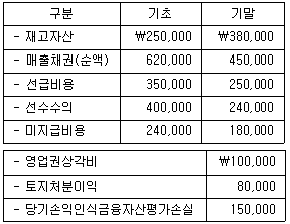
- ￦2,590,000
- ￦2,750,000
- ￦2,830,000
- ￦2,910,000
- ￦2,990,000
(정답률: 알수없음)
62. (주)감평은 20×5년 6월 2일에 주식 100주를 주당 ￦2,500에 취득하고, 취득과 직접적으로 관련된 수수료 ￦15,000을 지급하였다. 위 주식의 각 연도말 주당 공정가치는 다음과 같다.
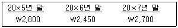
(주)감평이 20×8년 1월 2일에 동 주식 전부를 주당 ￦2,750에 처분하였다. (주)감평이 동 주식을 취득시점에서 단기매매금융자산으로 분류했을 경우와 매도가능금융자산으로 분류했을 경우로 구분하여 20×8년에 인식할 처분손익을 각각 계산하면 얼마인가? (순서대로 단기매매금융자산, 매도가능금융자산)
- 손실 ￦25,000, 손실 ￦25,000
- 손실 ￦5,000, 이익 ￦25,000
- 이익 ￦5,000, 이익 ￦10,000
- 이익 ￦5,000, 이익 ￦25,000
- 이익 ￦5,000, 손실 ￦10,000
(정답률: 알수없음)
63. 재무제표 표시의 일반사항에 관한 설명으로 옳지 않은 것은?
- 당해 기간의 기타포괄손익금액을 기능별로 분류해야 하며, 다른 한국채택국제회계기준서에 따라 후속적으로 당기손익으로 재분류되지 않는 항목과 재분류되는 항목을 각각 집단으로 묶어 표시한다.
- 경영진이 기업을 청산하거나 경영활동을 중단할 의도를 가지고 있지 않거나, 청산 또는 경영활동의 중단 외에 다른 현실적 대안이 없는 경우가 아니면 계속기업을 전제로 재무제표를 작성한다.
- 재무제표는 기업의 재무상태, 재무성과 및 현금흐름을 공정하게 표시해야 하며, 이를 위해서 '개념체계'에서 정한 자산, 부채, 수익 및 비용에 대한 정의와 인식요건에 따라 거래, 그 밖의 사건과 상황의 효과를 충실하게 표현해야 한다.
- 사업내용의 유의적인 변화나 재무제표를 검토한 결과 다른 표시나 분류방법이 더 적절한 것이 명백한 경우, 한국채택국제회계기준에서 표시방법의 변경을 요구하는 경우가 아니면 재무제표항목의 표시와 분류는 매기 동일하여야 한다.
- 전체 재무제표는 적어도 1년마다 작성하되, 보고기간종료일의 변경으로 보고기간이 1년을 초과하거나 미달하게 되는 경우는 그렇지 않다.
(정답률: 알수없음)
64. (주)대한은 20×5년 초 기계장치를 공정가치 ￦296,894에 구입하여, (주)감평에 5년간 임대해 주는 금융리스계약을 체결하였다. (주)감평은 리스료를 매년 말 ￦80,000씩 지급한다. 리스기간 종료시 동 기계장치의 잔존가치는 ￦15,000이며, 이 가운데 보증잔존가치는 ￦8,000이다. 리스계약 체결시 (주)감평이 지출한 리스개설직접원가는 ￦5,000이다. 리스종료일에 리스자산은 반환되며, (주)대한의 내재이자율은 12%이다. (주)감평이 20×5년 초 인식할 금융리스자산의 금액은? (단, 12%, 5년의 정상연금의 현재가치는 3.60478, 단일금액의 현재가치는 0.56743이다. 단수차이로 인한 오차가 있으면 가장 근사치를 선택한다.)
- ￦292,894
- ￦292,922
- ￦296,894
- ￦297,922
- ￦301,894
(정답률: 알수없음)
65. (주)감평은 20×1년 7월 1일 임직원 40명에게 다음과 같은 조건으로 1인당 100개의 주식선택권을 부여하였다. 20×1년 말 현재 2명이 퇴사하였으며, 가득기간 종료시점(20×4년 6월 30일) 이전까지 2명이 추가 퇴사할 것으로 예상된다. 20×1년에 인식할 주식보상비용은? (단, 주식보상비용은 월할계산한다.)
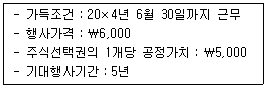
- ￦1,800,000
- ￦2,160,000
- ￦2,400,000
- ￦3,000,000
- ￦3,600,000
(정답률: 알수없음)
66. (주)감평은 제품 구입 후 1년 이내에 발생하는 제품의 결함에 대하여 제품보증을 실시하고 있다. 20×3년에 판매된 제품에 대하여 중요하지 않은 결함이 발생한다면 ￦50,000의 수리비용이 발생하고, 치명적인 결함이 발생하면 ￦200,000의 수리비용이 발생한다. 과거경험률에 따르면 70%는 결함이 없으며, 20%는 중요하지 않은 결함이 발생하며, 10%는 치명적인 결함이 발생한다고 할 때 20×3년 말에 제품보증충당부채로 인식할 금액은? (단, 20×3년 말까지 발생한 수리비용은 없다.)
- ￦10,000
- ￦20,000
- ￦30,000
- ￦200,000
- ￦250,000
(정답률: 알수없음)
67. (주)감평은 20×3년, 20×4년에 당기순이익을 각각 ￦55,000, ￦56,000으로 보고하였지만, 다음과 같은 오류를 포함하고 있었다. 이러한 오류가 20×3년과 20×4년의 순이익에 미친 영향은? (순서대로 20×3년, 20×4년)
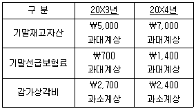
- ￦8,400 과대계상, ￦5,100 과소계상
- ￦8,400 과대계상, ￦5,100 과대계상
- ￦8,400 과소계상, ￦5,100 과대계상
- ￦8,400 과소계상, ￦10,800 과소계상
- ￦8,400 과소계상, ￦10,800 과대계상
(정답률: 알수없음)
68. 투자부동산에 해당되는 항목을 모두 고른 것은?
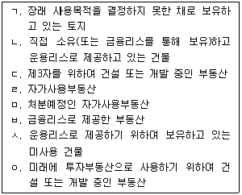
- ㄱ, ㄴ, ㄹ
- ㄱ, ㄴ, ㅅ, ㅇ
- ㄱ, ㄷ, ㅁ, ㅂ
- ㄴ, ㄷ, ㅂ, ㅇ
- ㄱ, ㄴ, ㄷ, ㅁ, ㅅ, ㅇ
(정답률: 알수없음)
69. 다음은 (주)감평의 20×1년 연구 및 개발활동 지출에 관한 자료이다. (주)감평이 20×1년에 연구활동으로 분류해야 하는 금액은?
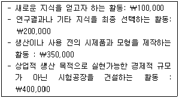
- ￦300,000
- ￦450,000
- ￦500,000
- ￦550,000
- ￦600,000
(정답률: 알수없음)
70. (주)감평은 20×1년 중에 단기매매목적으로 공정가치 ￦10,000,000의 주식을 취득하고, 20×2년 7월 1일에 예외적인 상황이 발생하여 단기매매 금융자산을 매도가능금융자산으로 재분류하였다. 동 주식의 공정가치는 다음과 같다.
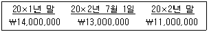
동 주식과 관련하여 다음의 설명 중 옳지 않은 것은?
- 20×1년 순이익이 ￦4,000,000 증가한다.
- 20×2년 매도가능금융자산평가손실이 ￦2,000,000 인식된다.
- 20×2년 단기매매금융자산평가손실이 ￦1,000,000 인식된다.
- 20×2년 총자본이 ￦3,000,000 감소한다.
- 20×2년 기타포괄손익누계액이 ￦3,000,000 감소한다.
(정답률: 알수없음)
71. 전년도에 (주)감평의 변동원가는 매출액의 60%였고, 고정원가는 매출액의 10%이었다. 당해연도에 경영자가 단위당 판매가격을 10% 인상하였을 경우, 전년대비 당해연도의 공헌이익 증가율은? (단, 판매량과 단위당 변동원가 및 고정원가는 변하지 않는다.)
- 5%
- 10%
- 15%
- 20%
- 25%
(정답률: 알수없음)
72. (주)감평은 두 개의 보조부문(X부문, Y부문)과 두 개의 제조부문(A부문, B부문)으로 구성되어있다. 각각의 부문에서 발생한 부문원가는 A부문 ￦100,000, B부문 ￦200,000, X부문 ￦140,000, Y부문 ￦200,000이다. 각 보조부문이 다른 부문에 제공한 용역은 다음과 같다.
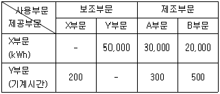
(주)감평이 단계배부법을 이용하여 보조부문원가를 제조부문에 배부할 경우, A부문과 B부문 각각의 부문원가 합계는? (단, 배부 순서는 Y부문의 원가를 먼저 배부한다.) (순서대로 A부문원가 합계, B부문원가 합계)
- ￦168,000, ￦172,000
- ￦202,000, ￦328,000
- ￦214,000, ￦336,000
- ￦244,000, ￦356,000
- ￦268,000, ￦372,000
(정답률: 알수없음)
73. (주)감평은 생활용품을 생산ㆍ판매하고 있다. 20×5년 생산량은 1,200단위이고 판매량은 1,000 단위이다. 판매가격 및 원가 자료는 다음과 같다.
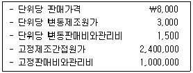
전부원가계산방법으로 계산한 영업이익은 변동원가계산방법으로 계산한 영업이익에 비해 얼마만큼 증가 또는 감소하는가? (단, 기초재고자산과 기말재공품은 없다.)
- ￦400,000 증가
- ￦400,000 감소
- ￦600,000 증가
- ￦600,000 감소
- ￦500,000 감소
(정답률: 알수없음)
74. 선박을 제조하여 판매하는 (주)감평은 20×5년 초에 영업을 개시하였으며, 제조와 관련된 원가 및 활동에 관한 자료는 다음과 같다.
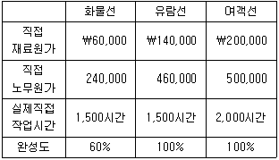
(주)감평은 직접작업시간을 제조간접원가 배부 기준으로 사용하는 정상원가계산제도를 채택하고 있다. 20×5년 제조간접원가예산은 ￦480,000이고 예정 직접작업시간은 6,000시간이다. 20×5년에 발생한 실제 제조간접원가는 ￦500,000이고, 완성된 제품 중 여객선은 고객에게 인도되었다. 제조간접원가 배부차이를 총원가(총원가비례배분법)를 기준으로 조정할 경우 제품원가는?
- ￦450,000
- ￦750,000
- ￦756,000
- ￦903,000
- ￦1,659,000
(정답률: 알수없음)
75. (주)감평은 종합원가계산을 채택하고 있다. 원재료는 공정초에 전량 투입되며, 가공원가(전환원가)는 공정 전반에 걸쳐 균등하게 발생한다. 공손 및 감손은 발생하지 않는다. 다음은 20×5년 6월의 생산활동과 관련된 자료이다.
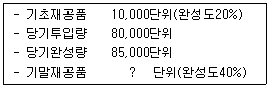
가중평균법과 선입선출법에 의하여 각각 완성품환산량을 구하면, 가공원가(전환원가)의 완성품환산량 차이는?
- 2,000단위
- 4,000단위
- 6,000단위
- 8,000단위
- 10,000단위
(정답률: 알수없음)
76. 다음 자료를 이용하여 계산한 (주)감평의 20×5년 손익분기점 매출액은?
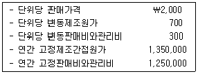
- ￦2,500,000
- ￦2,700,000
- ￦4,000,000
- ￦5,200,000
- ￦5,400,000
(정답률: 알수없음)
77. (주)감평의 20×5년 생산활동 및 제조간접원가에 관한 정보는 다음과 같다.
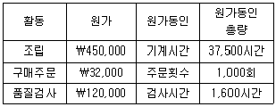
제품 #23의 생산 및 판매와 관련된 활동 및 원가정보는 다음과 같다.
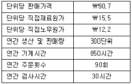
활동기준원가계산을 사용할 경우, 제품 #23의 매출총이익은?
- ￦3,570
- ￦7,725
- ￦11,880
- ￦15,330
- ￦18,900
(정답률: 알수없음)
78. (주)감평은 향후 6개월의 월별 매출액을 다음과 같이 추정하였다.
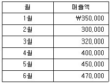
(주)감평의 모든 매출은 외상거래이다. 외상매출 중 70%는 판매한 달에, 25%는 판매한 다음 달에 현금회수될 것으로 예상되고, 나머지 5%는 회수가 불가능할 것으로 예상된다. (주)감평은 당월 매출액 중 당월에 현금회수된 부분에 대해 2%를 할인해주는 방침을 가지고 있다. (주)감평이 예상하는 4월의 현금유입액은?
- ￦294,400
- ￦300,400
- ￦354,400
- ￦380,400
- ￦406,400
(정답률: 알수없음)
79. 표준원가계산제도를 채택하고 있는 (주)감평의 20×5년 6월의 제조간접원가 예산과 실제발생액은 다음과 같다.
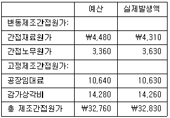
(주)감평은 고정제조간접원가의 예산을 월간 2,800기계시간을 기준으로 수립하였다. 20×5년 6월 실제 기계시간은 2,730시간이다. 만약 실제 생산량에 허용된 표준 기계시간이 2,860시간이라면, 6월의 고정제조간접원가 조업도차이는?
- ￦534 불리
- ￦623 불리
- ￦702 불리
- ￦534 유리
- ￦623 유리
(정답률: 알수없음)
80. (주)감평의 20×5년 1월 1일 재공품 재고액은 ￦50,000이고, 1월 31일 재공품 재고액은 ￦100,000이다. 1월에 발생한 원가자료가 다음과 같을 경우, (주)감평의 20×5년 1월 당기제품 제조원가는?
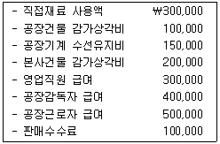
- ￦1,000,000
- ￦1,400,000
- ￦1,450,000
- ￦1,600,000
- ￦1,900,000
(정답률: 알수없음)
"지상이나 지하에 기반시설을 설치하려면 원칙적으로 그 시설의 종류ㆍ명칭ㆍ위치ㆍ규모 등을 미리 도시ㆍ군기본계획으로 결정하여야 한다."는 기반시설의 설치에 대한 계획적인 접근을 강조하는 내용입니다. 이는 도시계획의 중요성을 강조하는 것으로, 기반시설의 설치는 무작정 이루어지면 안 되며, 계획적으로 이루어져야 한다는 것을 의미합니다.